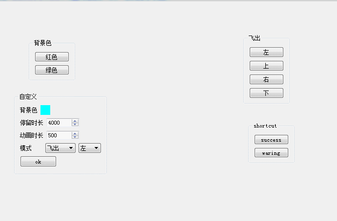
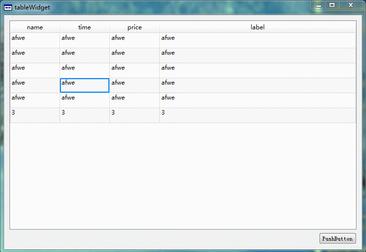

原文出处:本文由博客园博主朝十晚八提供。
原文连接:https://www.cnblogs.com/swarmbees/p/10836505.html
原文连接:https://www.cnblogs.com/swarmbees/p/10836505.html
一、自定义通用对话框
仿照windows使用Qt实现了一个自定义通用对话框，支持左侧节点扩展，右侧也支持注册自定义窗口，例如文件预览等等，可以和中间视图列表进行通信
- 支持打开、保存、另存为3种模式
- 支持5种预览模式
- 支持前进后退操作
- 之前当前目录搜索
- 新增文件、删除文件
- 文件重命名
- 文件排序等等
- 按功能记录最后访问位置
- 记录程序退出时的大小、排序列、列宽度
- 按类型过滤文件
- Windows有的常用功能基本都有。。。

二、提示框
操作完成提示框，支持多种消失动画，如下图所示，详细实现过程可阅读Qt之对话框消失动画

三、表格控件蚂蚁线
蚂蚁线是一个很常见的功能，但是却有很少的客户端实现过这个功能，如下图所示，是我自己实现的表格蚂蚁线，由于是demo，比较粗糙。详细实现过程可阅读Qt之表格控件蚂蚁线

四、动态启动图
由于我们的产品比较大，在软件启动的时候会消耗比较长的时间，原生的进度条已经不能满足我们的需求，这里我们开发了一个光效进度条，如果下图所示
光效进度条主要是做了一个进度动画，在已完成的部分上进行快速的迭代渲染，给用户一种直观感受，我们的软件一直努力加载

上面展示了一个动效启动事例。下面这张图是正式使用时的一个效果图
1、光效展示

2、延迟到达展示

五、Qt Designer二次开发
因为业务需要，我们对QtDesigner工具进行了二次开发，主要是集成了以下特性
- 我们产品自己封装的基础控件
- 引入了图片资源文件
- 引入了qss样式
- 添加了动态控件展示
- 添加了学习视频入口
- 美化了预览效果
- 支持自动生成信信号槽
- 集成了控件规范